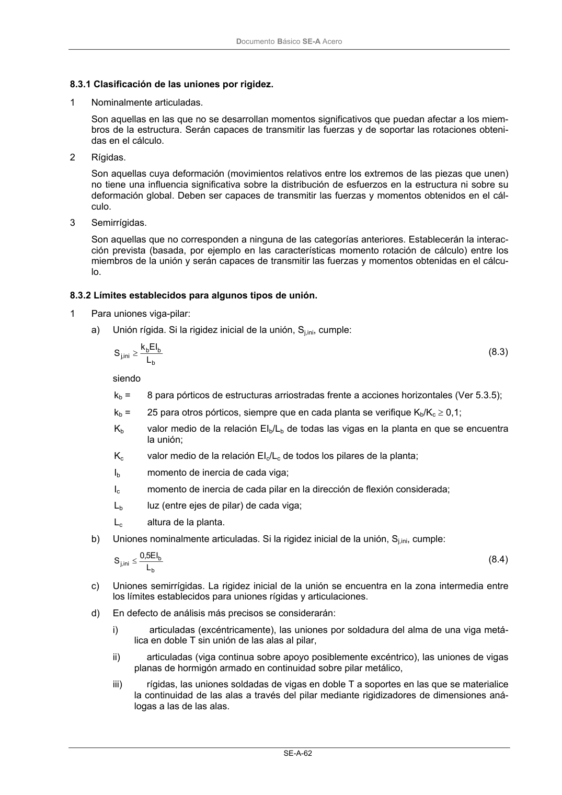

DB-SE-A Acero · edición 2007-10-23 · capa oficial
Documento DB-SE-A-oficial · SHA-256 del PDF 9ed9ea694aabfbda3bfbbef40dfe9223fde05d13c35bc2ba9751e5a96a22a64f
Copia fiel del PDF fuente · Fuente oficial
Ficha de la disposición en la fuente oficial
Formatos: JSON del segmento · Markdown
8.3.1 Clasificación de las uniones por rigidez. 1 Nominalmente articuladas. Son aquellas en las que no se desarrollan momentos significativos que puedan afectar a los miem- bros de la estructura. Serán capaces de transmitir las fuerzas y de soportar las rotaciones obteni- das en el cálculo. 2 Rígidas. Son aquellas cuya deformación (movimientos relativos entre los extremos de las piezas que unen) no tiene una influencia significativa sobre la distribución de esfuerzos en la estructura ni sobre su deformación global. Deben ser capaces de transmitir las fuerzas y momentos obtenidos en el cál- culo. 3 Semirrígidas. Son aquellas que no corresponden a ninguna de las categorías anteriores. Establecerán la interac- ción prevista (basada, por ejemplo en las características momento rotación de cálculo) entre los miembros de la unión y serán capaces de transmitir las fuerzas y momentos obtenidas en el cálcu- lo.
